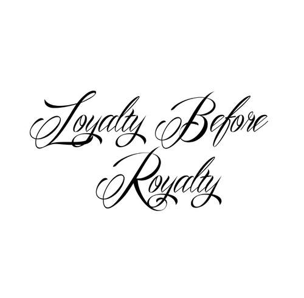

Lettering
O Lettering é simplesmente a arte de desenhar letras de forma exclusiva com uma enorme possibilidade de produzir diferentes formas de letras.
A BodyArt trabalha com diversos estilos de tatuagens para atender todos os nossos clientes, escolha qual é o seu favorito e faça um orçamento conosco.
Lettering
O Lettering é simplesmente a arte de desenhar letras de forma exclusiva com uma enorme possibilidade de produzir diferentes formas de letras.
Watercolor
O estilo Watercolor (aquarela) é um dos estilos de tatuagens mais populares atualmente que consiste em traços únicos, respingos, manchas leves e fusões de cores para se montar a imagem escolhida.
Geometric
Como na matemática as tatuagens Geometric (geométricas) são representações com retângulo, triângulo, quadrado, círculo, linhas e entre outros elementos que podem formar uma imagem.
Fazer orçamentoAbstract
O estilo Abstract (abstrato) é uma arte que não possui uma representação precisa de uma realidade visual como, por exemplo, você pode ter um desenho original sendo tatuado com alguns traços, efeitos e cores diferentes.
Dotwork
O estilo Dotwork (pontilhado) consiste em realizar ponto a ponto ou usar em algumas partes do desenho traços e sombras.
Fazer orçamentoOld school
Old school é um estilo de tatuagem americano ocidental ou tradicional que possui contornos em negrito e uma paleta de cores que pode ser limitada.
Minimalist
O estilo Minimalist contêm traços simples, com poucas cores para passar uma ideia sem que seja necessário que todos os traços estejam desenhados.
Fazer orçamentoBlackwork
O estilo Blackwork quer dizer trabalho em preto ou seja, a tatuagem é feita usando principalmente a tinta preta.
Single line
Feita com apenas uma única linha o estilo Single line está cada vez mais em destaque no mundo das tatuagens trazendo muita criatividade em sua pele.
Fazer orçamentoRealista
O estilo Realista pode ser desenhado usando diferentes cores e com o objetivo de reproduzir qualquer imagem com a maior autenticidade possível.
Sem contorno
O estilo Sem controno é justamente aquele em que as bordas pretas não serão destacadas, ficando apenas o preenchimento das cores do desenho.
Fazer orçamento